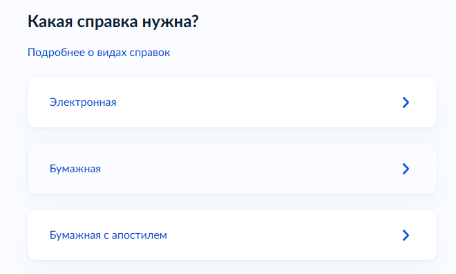

Документы
Справка о несудимости для Испании
Помощь в подаче документов на ВНЖ Испании: t.me/ola_espana
Справка о несудимости требуется при подаче на ВНЖ цифрового кочевника в Испании и для ряда других видов ВНЖ. Ниже — какая справка нужна, как получить её в России, поставить апостиль и сделать присяжный перевод.
Коротко
- Для подачи на ВНЖ цифрового кочевника российская справка нужна в бумажном оригинале с апостилем.
- Справка и апостиль переводятся на испанский у присяжного переводчика.
- Для ВНЖ цифрового кочевника UGE проверяет страны проживания за последние 2 года; отдельная декларация об отсутствии судимости охватывает 5 лет.
- Электронный PDF с Госуслуг без апостиля не заменяет комплект с бумажной справкой и апостилем.
Справка и декларация о несудимости
- Справка о несудимости — предоставляется из страны или стран, где заявитель проживал в течение последних 2 лет. Если заявитель уже имеет испанскую резиденцию или разрешение на пребывание сроком более 6 месяцев и справка о несудимости уже подавалась для получения этого разрешения, повторно UGE ее не требует. Если предыдущая испанская резиденция была получена без такой справки, это исключение не применяется.
- Декларация об отсутствии судимости — относится к последним 5 годам. В ней вы сами заявляете под свою ответственность, что за этот период не имели судимости; декларацию нужно заполнить и подписать самостоятельно. Скачать шаблон декларации.
Это правило прямо указано в перечне документов UGE для основного заявителя.
Какую справку получать в России
Официальное название документа: «Справка о наличии (отсутствии) судимости и (или) факта уголовного преследования либо о прекращении уголовного преследования».
Для подачи нужен комплект:
- Бумажная справка МВД.
- Апостиль МВД на справке.
- Присяжный перевод справки и апостиля на испанский.
Сначала получите справку с апостилем, затем передавайте весь комплект присяжному переводчику. Общие правила по иностранным документам собраны на странице «Требования к документам».
Электронный PDF с Госуслуг без апостиля сам по себе не заменяет бумажную справку с апостилем для этого пакета.
Как заказать на Госуслугах
- Откройте услугу «Справка об отсутствии судимости».
- На экране «Какая справка нужна?» выберите «Бумажная с апостилем».

- В заявлении укажите страну назначения: Испания. Закажите выдачу бумажного оригинала с апостилем, а не электронный PDF и не бумажную справку без апостиля.
- После получения передайте справку и апостиль присяжному переводчику.
Граждане России могут также оформить справку в консульстве России в Испании.
Получение через представителя
При выдаче в Москве на ул. Велозаводская, 6А справку может получить представитель по доверенности. Принимают как простую рукописную, так и нотариальную доверенность; отдельные сотрудники требуют оригинал нотариальной доверенности.
Если проживали в другой стране
В самой инструкции UGE указан общий принцип: справка нужна из страны или стран проживания за последние 2 года, без отдельного числового порога. При этом в официальных консульских инструкциях Испании для ВНЖ цифрового кочевника используется критерий более 6 месяцев (180 дней) проживания в другой стране в течение последних 2 лет.
Поэтому если в другой стране вы проживали более 6 месяцев за последние 2 года, отдельную справку нужно готовить. Для каждой справки проверьте способ легализации: апостиль или консульская легализация. Затем сделайте присяжный перевод на испанский.
Если справка подается не из страны гражданства, приложите документ, подтверждающий проживание в этой стране: ВНЖ, регистрацию или другой официальный документ.
Частые вопросы
Подойдет ли электронная справка с Госуслуг?
Для описанного здесь пакета заказывайте бумажную справку с апостилем. Электронный PDF без апостиля не закрывает требования к легализации иностранного официального документа.
Нужен ли апостиль?
Для российской справки — да. Апостиль ставится до перевода, чтобы присяжный переводчик перевёл и саму справку, и апостиль.
Нужен ли присяжный перевод?
Да. Переводится весь документ вместе с апостилем. Подробнее: как работает присяжный перевод для ВНЖ цифрового кочевника.
Что означает «2 года» и «5 лет»?
Два года относятся к справкам из стран проживания. Пять лет относятся к отдельной декларации заявителя об отсутствии судимости. Это два разных документа.
Нужна ли справка при уже действующей испанской резиденции?
Если испанская резиденция или разрешение на пребывание выданы более чем на 6 месяцев и справка уже предоставлялась для ее получения, UGE повторно ее не требует.